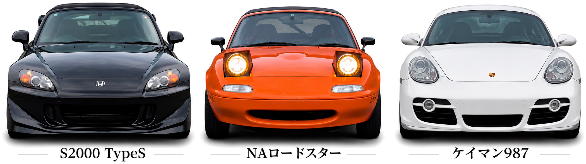
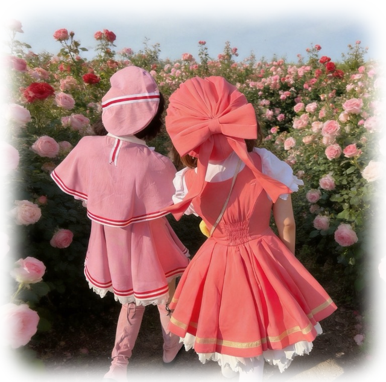
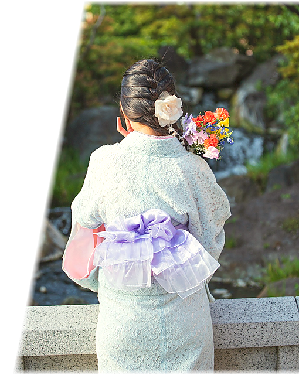

会社員として役員や代表の秘書を
経験後、フットワークの軽さと
マルチタスク・タスク管理の得意さ
を活かし、独立しました。
PROFILE
プロフィール
山本 奈々
株式会社NANALY
代 表 取 締 役
出身地
福井県
得意なこと
営業・マルチタスク
1日12時間眠れます
趣味
スポーツカー
全てMT車にこだわっています！

アニメ
シュタゲ・コードギアス・犬夜叉…
挙げたらキリがありません
実はコスプレにも挑戦しています！

海外旅行
今はまだ14ヶ国ですが、
もっともっと色んな国の
美術館と美味しいご飯を
食べに行きたいです！
いま、頑張っていること
- フットワークをさらに軽くすること
- NISAの1,800万円の枠を埋めること
わたしの活動
友人の死や、身内の闘病を目の
当たりにした経験をきっかけに、
お金や治療費の大切さを実感し、
身の回りの人を守りたいという想いで
始めました。日本の金融リテラシー
向上が必要だと考えています。
一般社団法人「子どもの未来と
お金の研究会」の発起人の一人として、
子どもたちの金融教育に
力を入れていきます。
新事業として、美容分野にも
取り組んでいます。安心・安全な
メイドインジャパンの業務用マシンの
開発と、海外への輸出を行います。
フリーでモデル活動をしています。
着物や商品広告のモデルを
させていただくことがあり、
趣味の一つとして、
楽しく活動しています。
